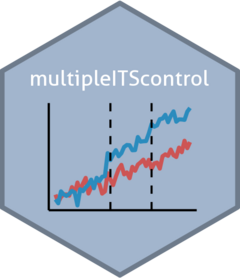

Dummy Bike Programme Data
its_data_bike_programme.RdA dummy data set documenting a two stage level intervention programme of the school scenario in the vignette. Report ...

its_data_bike_programme.RdA dummy data set documenting a two stage level intervention programme of the school scenario in the vignette. Report ...